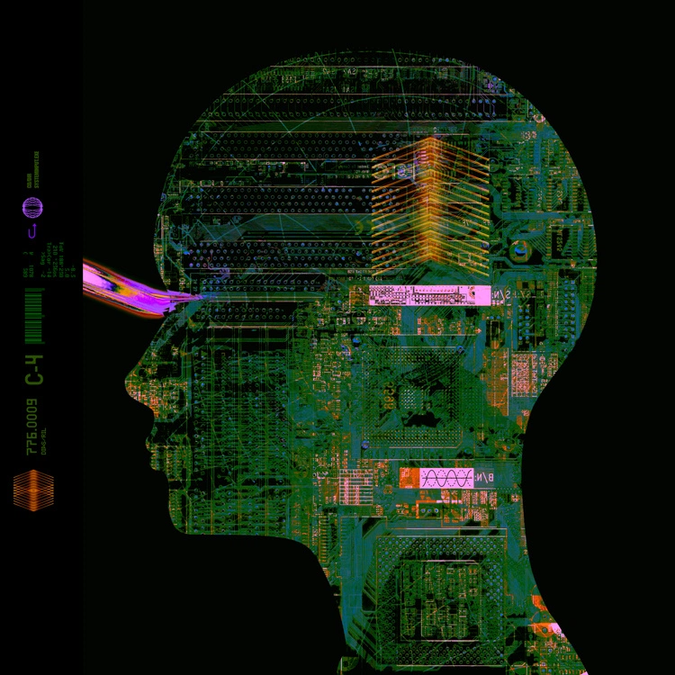
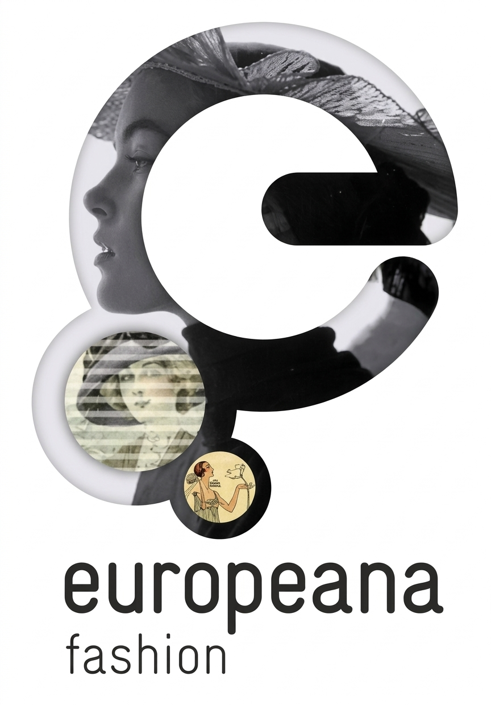
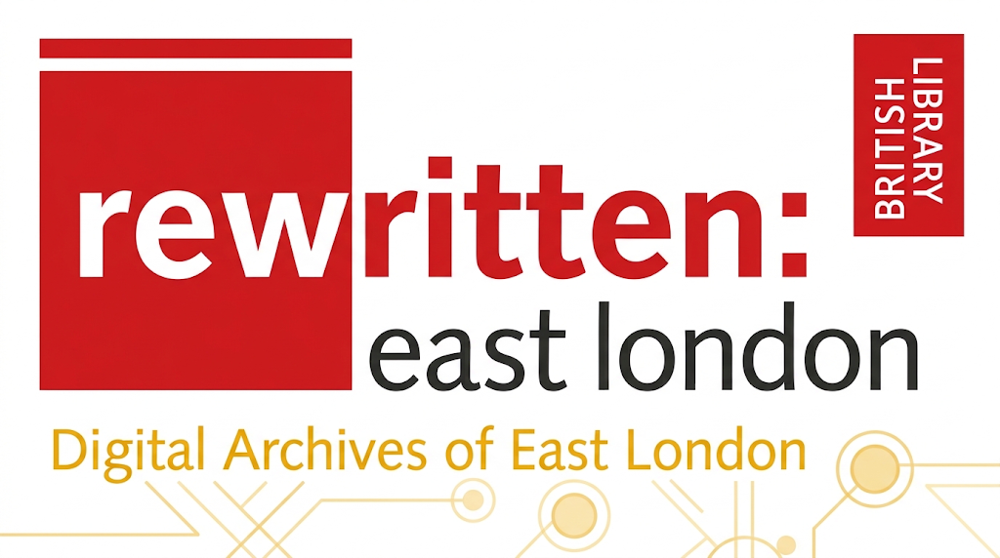
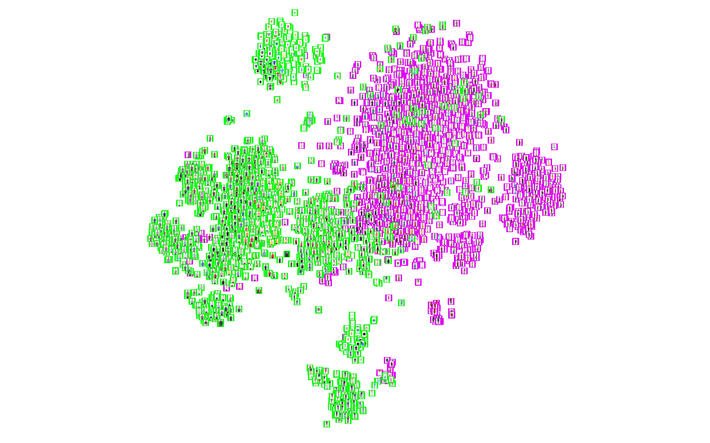
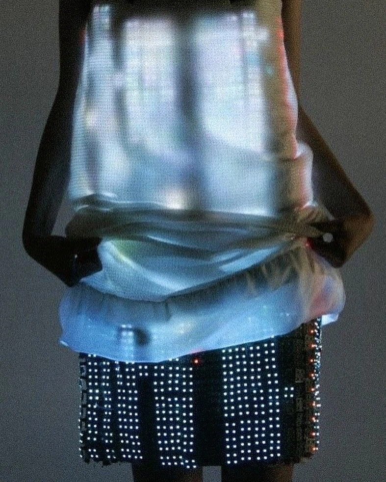

Rewear
Rethinking second-hand fashion discovery through transparency, reflection and user control.
Explore the case study
I explore how digital experiences shape our choices, connect us to culture, and help us make sense of information.
5 projects
Rethinking second-hand fashion discovery through transparency, reflection and user control.
Explore the case study
A critical investigation into how metadata shapes the discovery and reuse of fashion heritage.
Explore the case study
Connecting Communities Challenge · Digital Product Development · Cultural Heritage & Creative Sector
Explore the case study
A visual investigation of how a pretrained model groups fashion images.
Explore the case study
A small pilot comparing fashion judgements from a local and an API-based language model.
Explore the case studyMy background brings together languages, film and media, and digital humanities. I’m interested in the space where thoughtful research becomes a clearer, more considerate digital experience.